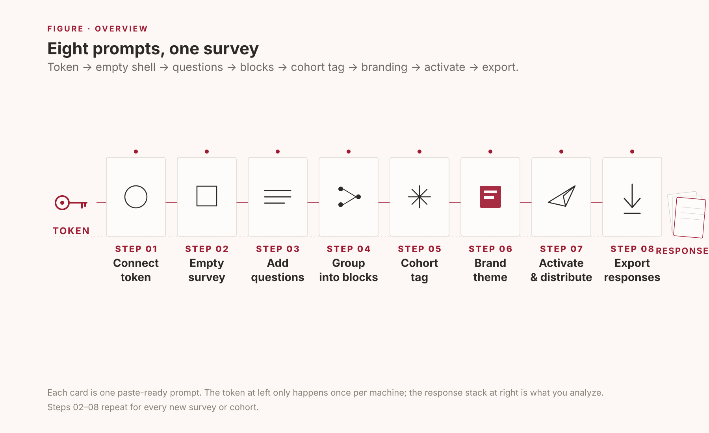
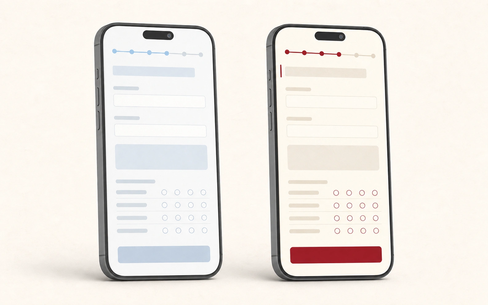
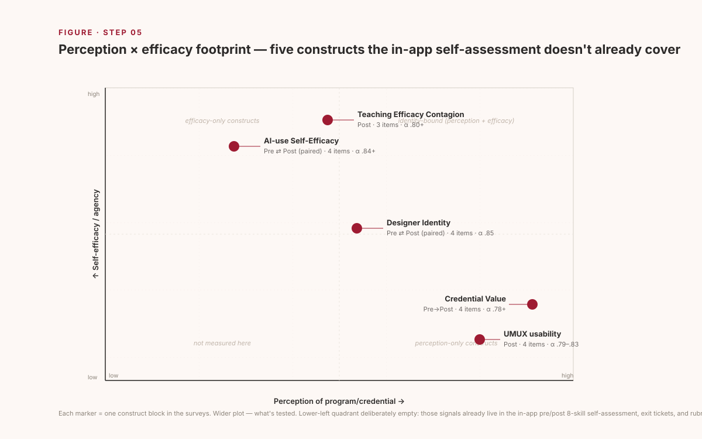
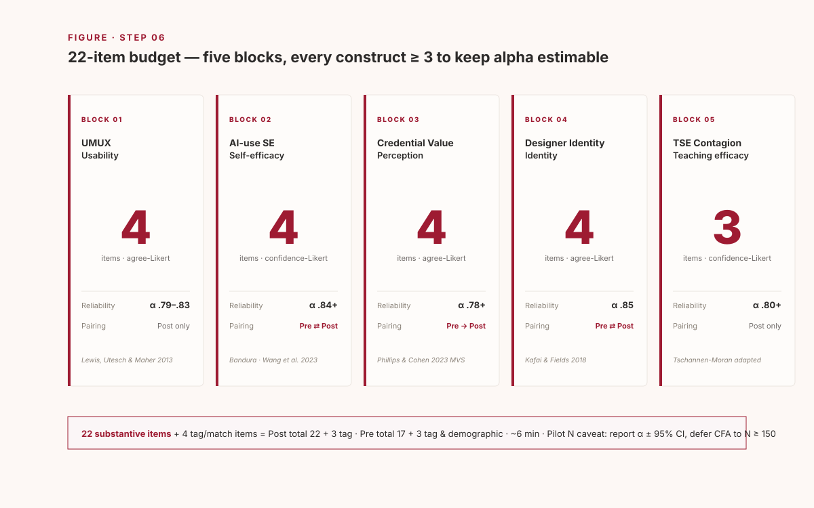

Part 1
Eight prompts to follow
For each step you'll see the prompt to paste (red box), what Claude Code does in reply (blue box), and what you'll see as a result (green box). Top to bottom, copy and paste.
Step 01 Connect the token once per machine
Get your API token out of Qualtrics, save it to a local text file, then point Claude Code at the file. Don't paste the token into chat.
pdx1, iad1, fra1).
Save them into any local .txt file.
I'll read the file, pull the 40-char token, and verify against the /whoami endpoint.
- Read the token file → extract the token line
- Call
GET /API/v3/whoamiwithX-API-TOKEN - Confirm brand / username / datacenter
- Save the file path to memory so future sessions skip this step
- One-line confirmation: "Connected — brand
your-brand, useryou#your-brand, datacenterpdx1" - From the next step on, no more token prompts
Step 02 Make an empty survey a single shell
Start with a blank shell. You only need to give it a name. Crucially, it's created inactive — no responses can come in yet.
One POST /survey-definitions call.
- Survey name: "My Project — Pre Survey"
- Language: EN · Category: CORE
- Created inactive by default
- One line:
SurveyID: SV_xxxxxxxxxxxxxxx - The empty shell appears in your Qualtrics UI → Projects tab right away
- You'll keep using this ID for the rest of the steps
Step 03 Add questions in plain language just describe them
This is where it gets easy. You don't have to know which question type is which (MC vs SAVR vs Matrix). Just say what you want to measure and which scale — Claude Code maps that to the right Qualtrics payload.
Four single-answer vertical-radio items, 5-point Strongly disagree → Strongly agree.
- 4 items via
POST /questions DataExportTag: USAB_1, USAB_2, USAB_3, USAB_4 (these become your CSV column names)ForceResponse: ON- All landed in the default block — we'll split into named blocks next step
- Open the survey in Qualtrics UI: 4 items rendered with the 5-point scale
- Click Preview to see the respondent's view
Step 04 Group into blocks section structure
Once you have more than a handful of items, split them into blocks (by construct or section). Better for analysis and better for the respondent.
Three blocks total, 7 new items added.
- Default block renamed to "1_Usability" (USAB_1–4)
- New block "2_AI-use Self-Efficacy" + AISE_1–4 (Bandura-style task-specific items)
- New block "3_Teaching Efficacy Contagion" + TSE_1–3
- Total 11 items. Estimated completion ~3 min
- The Qualtrics UI sidebar shows three blocks in a tree
- Each block expands to show only its own items
- Preview pages now break automatically between blocks
Step 05 Cohort tag one URL, many groups
When the same survey goes to multiple groups (spring vs. summer cohort,
school A vs. school B), you want each response to remember which group it
came from. Add ?cohort=… to the link and the value rides into
your data.
Added an EmbeddedData declaration to the very top of the survey flow.
- The URL value becomes a
cohortcolumn in the response CSV - Invisible to the respondent — pure metadata
- To target multiple groups, share the same survey with different
cohortvalues appended
- Qualtrics UI → Survey Flow tab shows "Set Embedded Data: cohort" at the top
- When you export later (Step 8),
cohortappears alongside your item columns
Step 06 Brand the survey institution color & type
Default Qualtrics is generic gray-blue. Branding to your institution's color noticeably lifts perceived legitimacy (and response rates). You only need to give Claude Code your color codes and header copy.
Pulled the existing options first, merged in the overrides, and PUT them back (idempotent).
- Buttons / progress bar / hover state → Crimson
- Body font → Inter (with system fallbacks)
- Header / Footer HTML applied
- SurveyProtection, PartialData, and other required keys preserved

- Click Preview → the right-hand mockup style renders
- Mobile responses keep the theme (responsive by default)
- Browser tab title becomes "MY PROJECT — Pre Survey"
Step 07 Activate & distribute go live
Everything so far has been inactive. Activate only after IRB / your own review is complete. Activation is split into its own explicit prompt on purpose, so you don't accidentally start collecting data.
Two calls:
PUT /surveys/{id}→isActive: truePOST /distributions→ anonymous link with the expiration you set
- One anonymous link:
https://<dc>.qualtrics.com/jfe/form/SV_xxx - For per-cohort sends, append
?cohort=2026-spring(or your tag) to the link - As responses arrive, watch the live count under Qualtrics UI → Data & Analysis
Step 08 Export responses CSV for analysis
Once enough responses are in, pull the CSV to your machine. Claude Code handles the async dance (request → poll → download) for you.
Async export → poll until complete → download zip → extract.
POST /export-responses→ returns a progressId- Poll status every couple seconds until
complete GET /export-responses/{fileId}/file→ zip → unzip- Final CSV columns include
cohort,USAB_1–4,AISE_1–4,TSE_1–3
- One file in your folder:
SurveyName_responses.csv - One row per respondent, columns named with your analysis tags
- Open in R / Python / SPSS / Excel and start analyzing
?cohort= tag in your link (Step 7), let responses
accumulate, and re-run Step 8. To build a brand-new survey, start again
from Step 2 — you don't need to redo Step 1 (the token is remembered).
Part 2 · Case
TeachPlay Pre/Post evaluation survey
The eight steps applied to a real project: a 12-session AI-enhanced educational game design microcredential at the University of Alabama. Pre 20 items + Post 22 items, built in a single combined prompt.
Case 01 One combined prompt when the design is settled
If your construct selection and item counts are already decided, you can fold Steps 02–06 into one message. Useful for handoff between cohorts or project replication.
Two surveys created in sequence — about 60 API calls total (~30 per survey).
- Wrote a small helper module + an instruments file first, so wording lives in one place
- Pre: empty shell → demographics → AI-SE baseline → Designer Identity → Credential Expectation
- Post: empty shell → tag → UMUX → AI-SE → Credential Value → Designer Identity → TSE Contagion
- Both surveys carry cohort EmbeddedData and the UA Crimson theme
- Both kept
isActive=falseas requested


Two themed, paired-ready surveys sitting inactive in UA Qualtrics, waiting on IRB sign-off.
- Pre —
SV_9QtpyWbqTypaFls· 20 items · ~5 min - Post —
SV_39sdRK7OVJvSiPk· 22 items · ~6 min - Both: UA Crimson theme + cohort URL param + anonymous matching code pairing
| Next action | Owner | When |
|---|---|---|
| UI preview (desktop + mobile) | PI | Now |
| File IRB R4 amendment (Credential Value · Designer Identity · TSE Contagion) | PI | Before activation |
| Run Step 7 (activate + distribute) | PI | After R4 approval |
| Cohort 1 close → Step 8 export → α + paired d_z | RA + PI | +30 days |
| Cohort 2-3 pooled (N ≥ 150) → CFA on Credential Value 3-factor | PI | Year 2 |